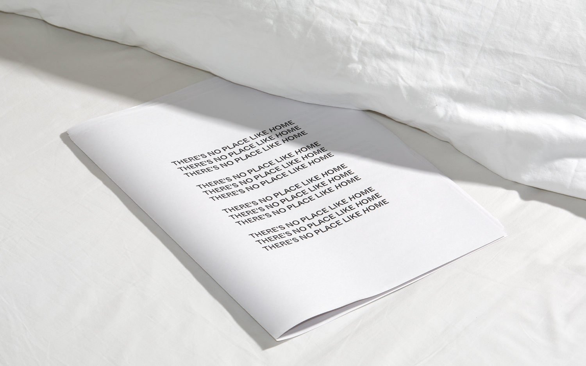
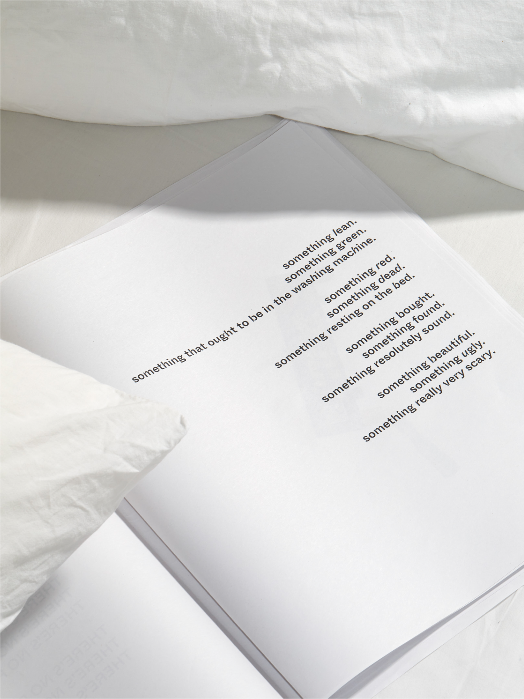

1 / 8

2 / 8

3 / 8
4 / 8
5 / 8
6 / 8

7 / 8

8 / 8
Collaborative Publication, 2 weeks
Typography, concept development
A collaborative photobook of images taken in 18 seperate bedrooms on 19 April 2021 in a workshop with Thomas Adank.
I was surprised by how differently we interpreted the line ‘something lean’. I reflected this in the typography.